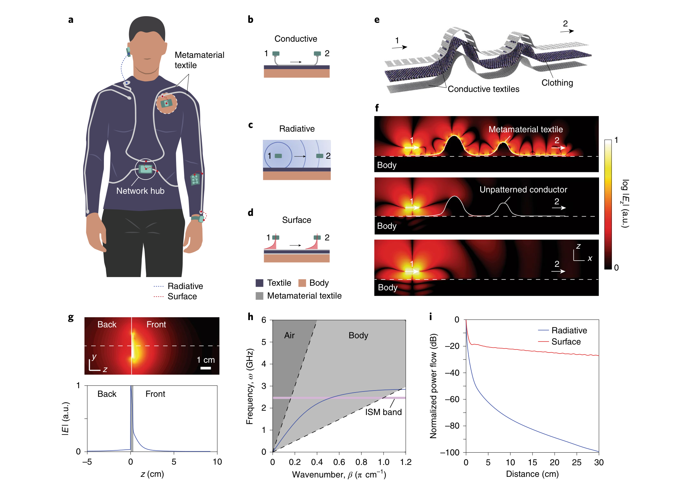
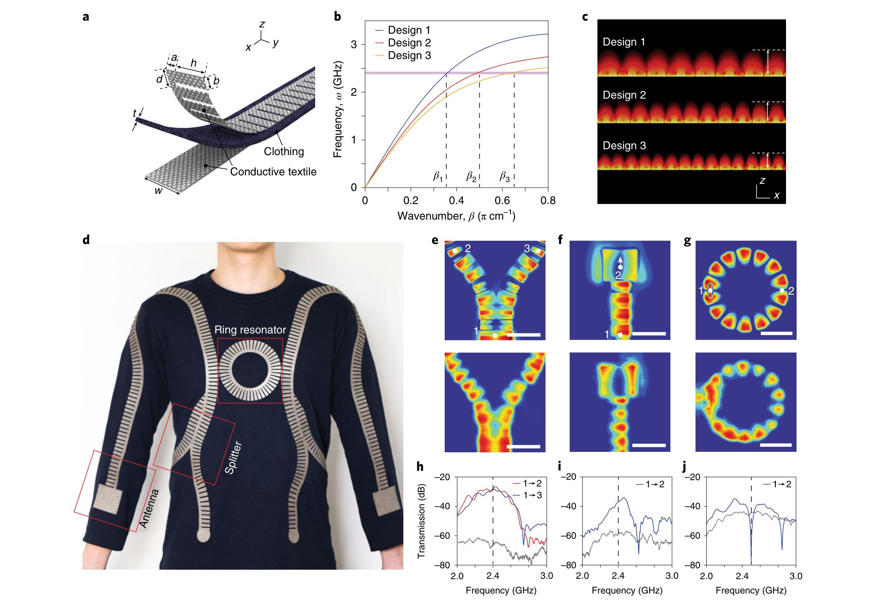
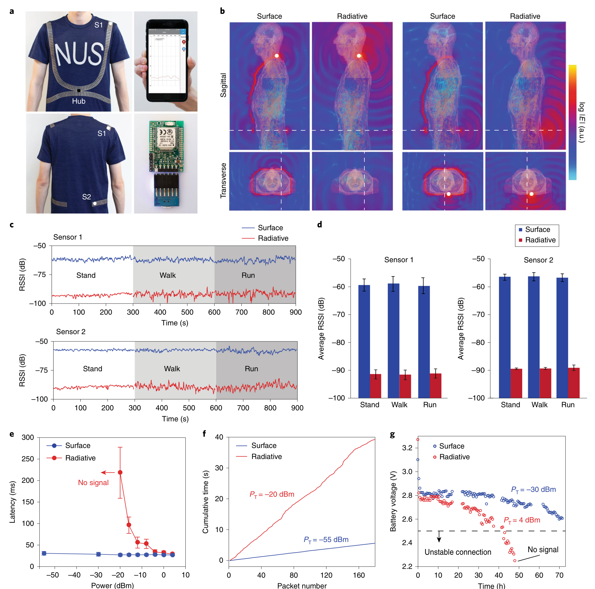
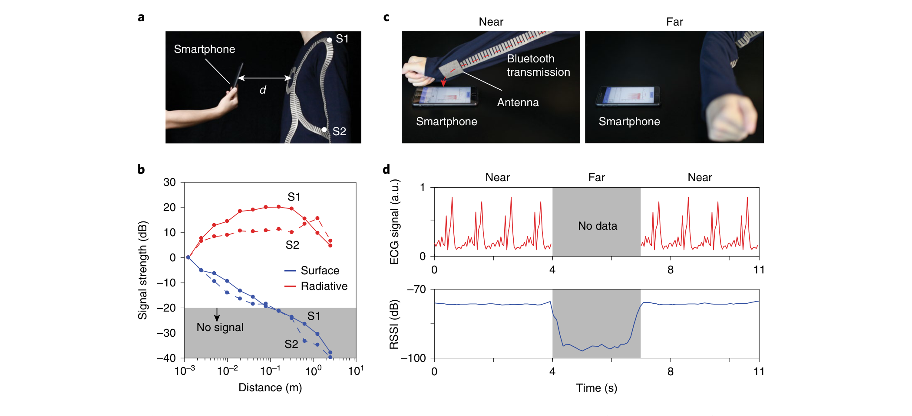
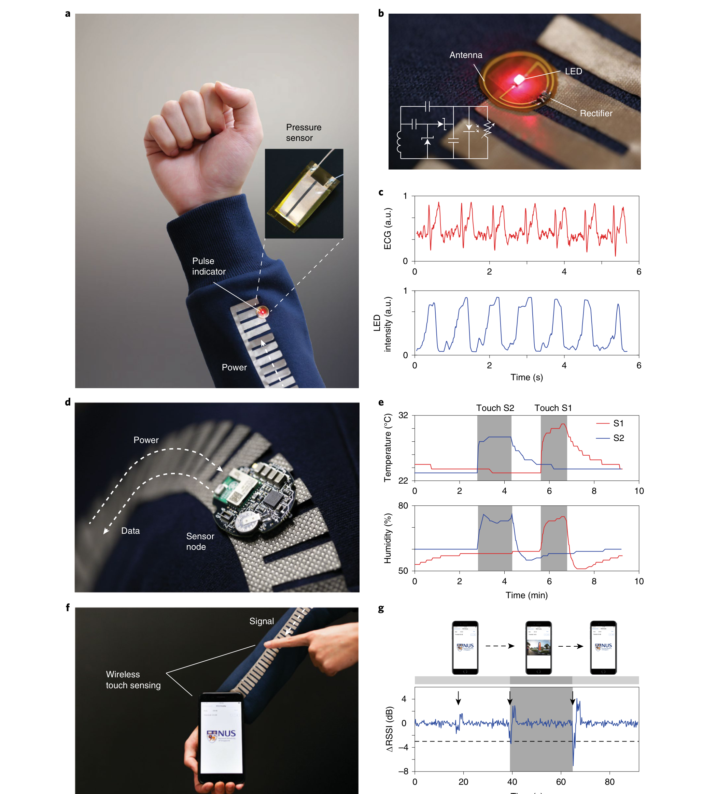

图 1
核心物理：让无线电波贴着衣服走，同时避开人体
第一图从网络架构一直走到色散与场分布：真正的难点不是让金属布导电，而是让 2.4 GHz 模式位于空气光线右侧、在衣服外侧指数衰减，并用底层导体切断向人体的泄漏。

作者用梳齿状导电织物、普通布层和连续导电底层构成 2.4 GHz 仿表面等离激元通道：普通蓝牙模块无需插接即可在毫米级近场内耦合，信号沿衣服而非向房间辐射。主通信实验中接收信号提高约 32 dB，并在该实验配置下把可通信范围限制到离身体约 10 cm；这提高了能效和空间隐私，但不等于密码学安全。
证据边界：以下图片从用户提供的正式论文 PDF 中按完整图体高分辨率裁取，用于公开研究解读；原始出版社 PDF 未公开。该文件含正文与 Reporting Summary，但不含 Supplementary Information，因此补充图中的弯曲、缝隙、干扰和效率细节只按正文转述，不假装已逐图复核。
它在“有线”和“向空间广播的无线”之间增加第三种连接方式：设备不接触导线，但其天线近场耦合到衣服上的受限表面波。顶层周期梳齿负责制造慢波色散，中间衣料提供介质间隔，连续金属底层屏蔽高介电人体；电场在衣服外侧保留约 5–10 mm 的衰减尾巴，让现成蓝牙天线可以靠近即接入。
第一图从网络架构一直走到色散与场分布：真正的难点不是让金属布导电，而是让 2.4 GHz 模式位于空气光线右侧、在衣服外侧指数衰减，并用底层导体切断向人体的泄漏。

作者不只做一条传输带，而是通过梳齿长度调节波数与衰减长度，并在衣服上组合功率分配器、辐射天线和环形谐振器，展示可构成更复杂的表面波网络。

这张图是全文最关键的证据：两个商业 BLE 模块分别放在肩部和后腰，手机位于腹部；作者把同一套活动协议在有/无超材料织物条件下重复，观察 RSSI、延迟、包速率和电池电压。

作者把手机当作附近窃听者，沿垂直身体方向移远；表面网络的信号随距离指数下降，而普通无线在离开身体遮挡后反而先变强。随后又把 ECG 沿袖子送到腕部天线，仅在靠近手机时完成最后一跳。

作者用肩部 2.4 GHz、20 dBm（100 mW）连续波沿袖子供电，在腕部点亮脉搏指示 LED，并进一步驱动无电池温湿度 BLE 节点；手指靠近时对表面波的扰动又可被 RSSI 当作触摸信号。

最小复现实验：制作梳齿三层结构、连续导电布和等金属面积随机图案三个对照，用 VNA 测 S21 随传播距离及天线高度变化，并做垂直近场扫描。只有周期结构同时出现指数场衰减、明显传输增益和对照中不存在的色散，才能排除“只是金属反射或天线方向改变”的替代解释。
← 返回论文细读书架